Chapter 5 Graphics in R Part 1: ggplot2
R can be used to create a vast array of graphical representations of data. Creating “standard” graphical displays is straightforward, but a main strength of R is the ability to customize graphical displays to create either non-standard graphics or to modify more standard graphical displays to create publication-ready versions.
There are several packages available in R for creating graphics. The two leading packages are the graphics package, which comes with your base installation of R, and the ggplot2 package, which must be installed and made available by the user.25 For beginners ggplot2 has somewhat simpler syntax, and also produces excellent graphics without much tinkering. However, the graphics package seemingly provides more control over different graphical parameters, and can sometimes be more intuitive than ggplot2.
Knowing how to use both the graphics and ggplot2 packages is worthwhile, so we denote one chapter to ggplot2 and a second chapter to graphics. We use ggplot2 throughout the text, and thus require you to read this chapter on ggplot2, while the following chapter on the graphics package is optional. You’ll notice that the chapters are essentially the same, producing the same graphs (with a few exceptions) to let you decide which graphing style you prefer. If you choose to read through the graphics package chapter, you can complete the associated exercises with either graphics package you like (or a combination of the two). We simply want to present you with both sets of tools so that in the future when you have graphs to produce you can use whichever package floats your boat! For now we’ll start off with ggplot2 and get to graphics in Chapter 6.
The gg in ggplot2 stands for Grammar of Graphics. The package provides a unified and logical way to describe graphical displays such as scatter plots, histograms, bar charts, and many other types of graphics. The grammar describes the mapping from data to the graphical display’s aesthetic attributes (color, shape, size) of geometric objects (points, lines, bars). As will become obvious, once this grammar is mastered for a particular type of plot, such as a scatter plot, it is easy to transfer this knowledge to other types of graphics.
Once you work through this chapter, the best place to learn more about ggplot2 is from the package’s official book Wickham and Sievert (2016) by Hadley Wickham. It is available on-line in digital format from MSU’s library. The book goes into much more depth on the theory underlying the grammar and syntax, and has many examples on solving practical graphical problems. In addition to the free on-line version available through MSU, the book’s source code is available at https://github.com/hadley/ggplot2-book.
Another useful resource is the ggplot2 extensions guide http://www.ggplot2-exts.org. This site lists packages that extend ggplot2. It’s a good place to start if you’re trying to do something that seems hard with ggplot2. We’ll explore a few of these extension packages toward the end of this chapter.
5.1 Scatter Plots
Scatter plots are a workhorse of data visualization and provide a good entry point to the ggplot2 system. Begin by considering a simple and classic data set sometimes called Fisher’s Iris Data. These data are available in R.
> data(iris)
> str(iris)'data.frame': 150 obs. of 5 variables:
$ Sepal.Length: num 5.1 4.9 4.7 4.6 5 5.4 4.6 5 4.4 4.9 ...
$ Sepal.Width : num 3.5 3 3.2 3.1 3.6 3.9 3.4 3.4 2.9 3.1 ...
$ Petal.Length: num 1.4 1.4 1.3 1.5 1.4 1.7 1.4 1.5 1.4 1.5 ...
$ Petal.Width : num 0.2 0.2 0.2 0.2 0.2 0.4 0.3 0.2 0.2 0.1 ...
$ Species : Factor w/ 3 levels "setosa","versicolor",..: 1 1 1 1 1 1 1 1 1 1 ...The data contain measurements on petal and sepal length and width for dim(iris)[1] iris plants. The plants are from one of three species, and the species information is also included in the data frame. The data are commonly used to test classification methods, where the goal would be to correctly determine the species based on the four length and width measurements. To get a preliminary sense of how this might work, we can draw some scatter plots of length versus width. Recall that ggplot2 is not available by default, so we first have to download and install the package.
> install.packages("ggplot2")Once this is done the package is installed on the local hard drive, and we can use the library function to make the package available during the current R session.
Next a basic scatter plot is drawn. We’ll keep the focus on sepal length and width, but of course similar plots could be drawn using petal length and width. The prompt is not displayed below, since the continuation prompt + can cause confusion.
library(ggplot2)
ggplot(data = iris, aes(x = Sepal.Length, y = Sepal.Width)) +
geom_point()
In this case the first argument to the ggplot function is the name of the data frame. Second, the aes (short for aesthetics) function specifies the mapping to the x and y axes. By itself the ggplot function as written doesn’t tell R what sort of graphical display is desired. That is done by adding a geom (short for geometry) specification, in this case geom_point.
Looking at the scatter plot and thinking about the focus of finding a method to classify the species, two thoughts come to mind. First, the plot might be improved by increasing the size of the points. And second, using different colors for the points corresponding to the three species would help.
ggplot(data = iris, aes(x = Sepal.Length, y = Sepal.Width)) +
geom_point(size = 4, aes(color=Species))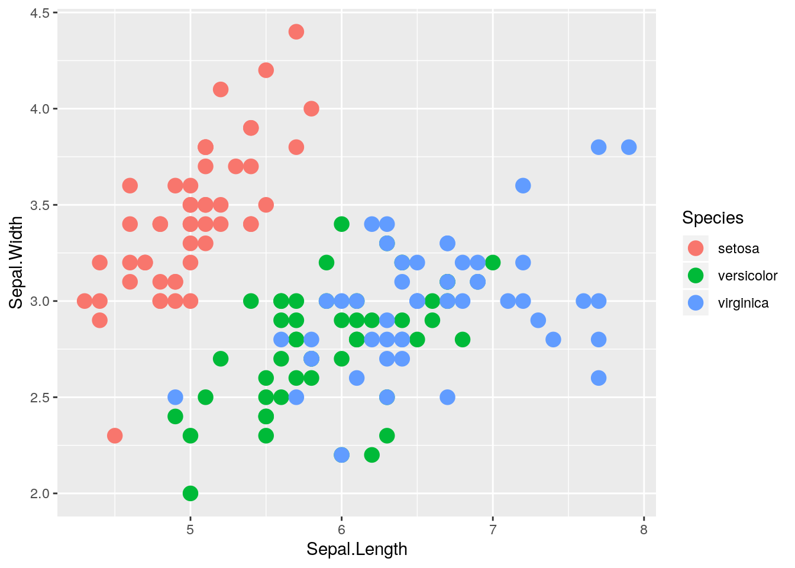
Notice that a legend showing what the colors represent is automatically generated and included in the graphic. Next, the size of the points seems a bit big now, and it might be helpful to use different shapes for the different species.
ggplot(data = iris, aes(x = Sepal.Length, y = Sepal.Width)) +
geom_point(size = 3, aes(color=Species, shape=Species))Here we see that the legend automatically changes to include species specific color and shape. The size of the points seems more appropriate.
5.1.1 Structure of a Typical ggplot
The examples above start with the function ggplot(), which takes as arguments the data frame containing the data to be plotted as well as a mapping from the data to the axes, enclosed by the aes() function. Next a geom function, in the above case geom_point(), is added. It might just specify the geometry, but also might specify aspects such as size, color, or shape.
Typically many graphics are created and discarded in the search for an informative graphic, and often the initial specification of data and basic aesthetics from ggplot() stays the same in all the attempts. In such a case it can be helpful to assign that portion of the graphic to an R object, both to minimize the amount of typing and to keep certain aspects of all the graphics constant. Here’s how that could be done for the graphics above.
iris.p <- ggplot(data = iris, aes(x = Sepal.Length, y = Sepal.Width))
iris.p + geom_point()
iris.p + geom_point(size = 3, aes(color = Species, shape = Species))
5.1.2 Adding lines to a scatter plot
To add a fitted least squares line to a scatter plot, use stat_smooth, which adds a smoother (possibly a least squares line, possibly a smooth curve fit to the data, etc.). The argument method = lm specifies a line fitted by least squares, and the argument se = FALSE suppresses the default display of a confidence band around the line or curve which was fit to the data.
ggplot(data = iris, aes(x = Sepal.Length, y = Sepal.Width)) +
geom_point(size=3, aes(color=Species))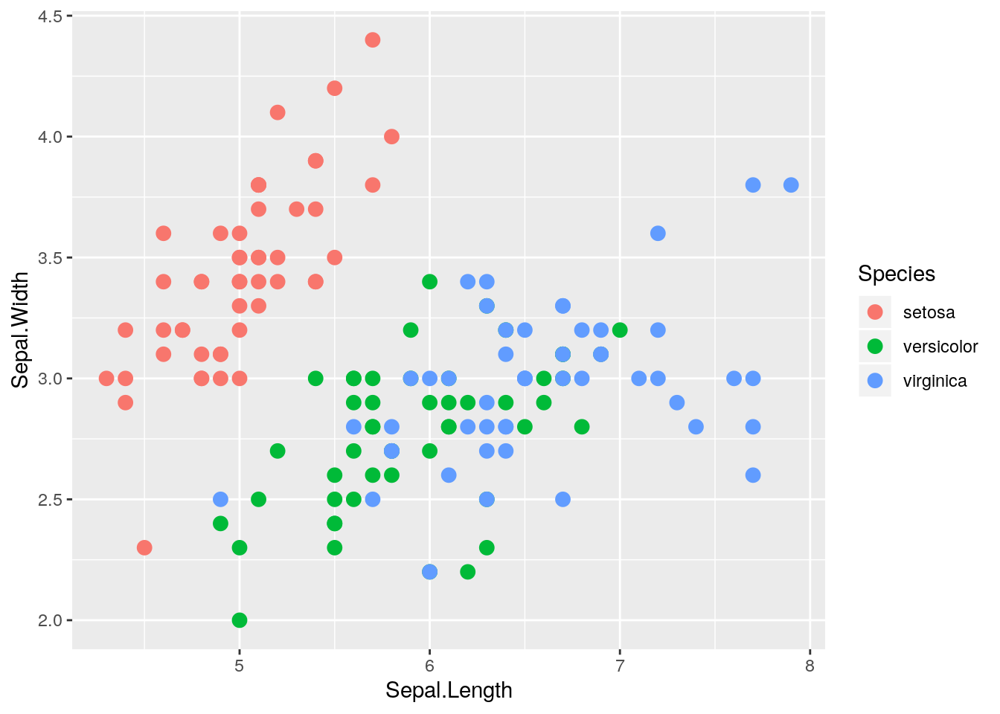
ggplot(data = iris, aes(x = Sepal.Length, y = Sepal.Width)) +
geom_point(size=3, aes(color=Species)) +
stat_smooth(method = lm, se=FALSE)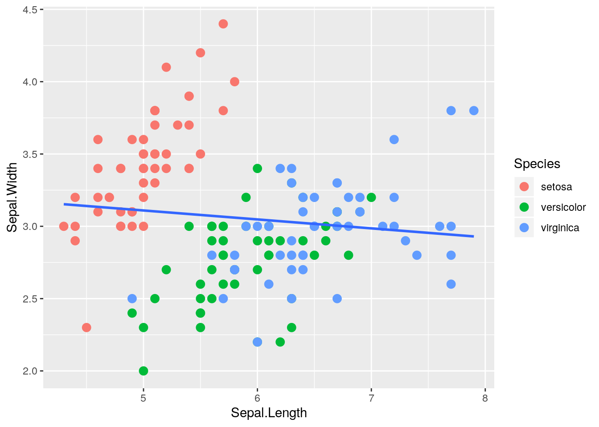
For the iris data, it probably makes more sense to fit separate lines by species. This can be specified using the aes() function inside stat_smooth().
ggplot(data = iris, aes(x = Sepal.Length, y = Sepal.Width)) +
geom_point(size=3, aes(color=Species)) +
stat_smooth(method = lm, se=FALSE, aes(color=Species))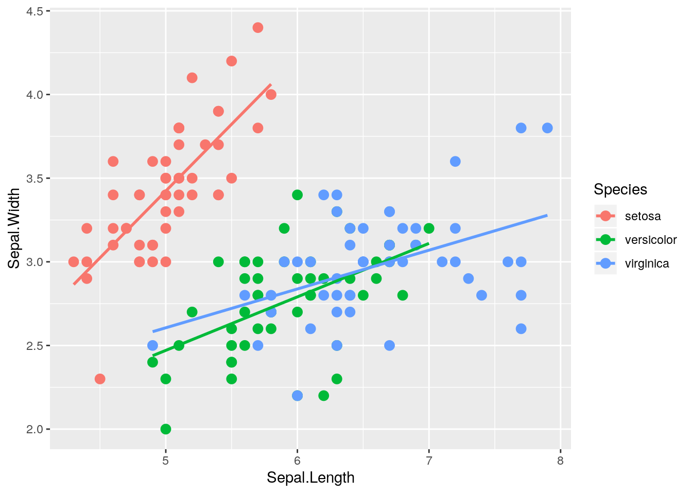
In this case we specified the same color aesthetic for the points and the lines. If we know we want this color aesthetic (colors corresponding to species) for all aspects of the graphic, we can specify it in the main ggplot() function:
ggplot(data = iris, aes(x = Sepal.Length, y = Sepal.Width, color = Species)) +
geom_point(size=3) + stat_smooth(method = lm, se=FALSE)Another common use of line segments in a graphic is to connect the points in order, accomplished via the geom_line() function. Although it is not clear why this helps in understanding the iris data, the technique is illustrated next, first doing this for all the points in the graphic, and second doing this separately for the three species.
ggplot(data = iris, aes(x = Sepal.Length, y = Sepal.Width)) +
geom_point(size = 4, aes(color=Species, shape = Species)) +
geom_line()
ggplot(data = iris, aes(x = Sepal.Length, y = Sepal.Width)) +
geom_point(size = 4, aes(color=Species)) +
geom_line(aes(color=Species))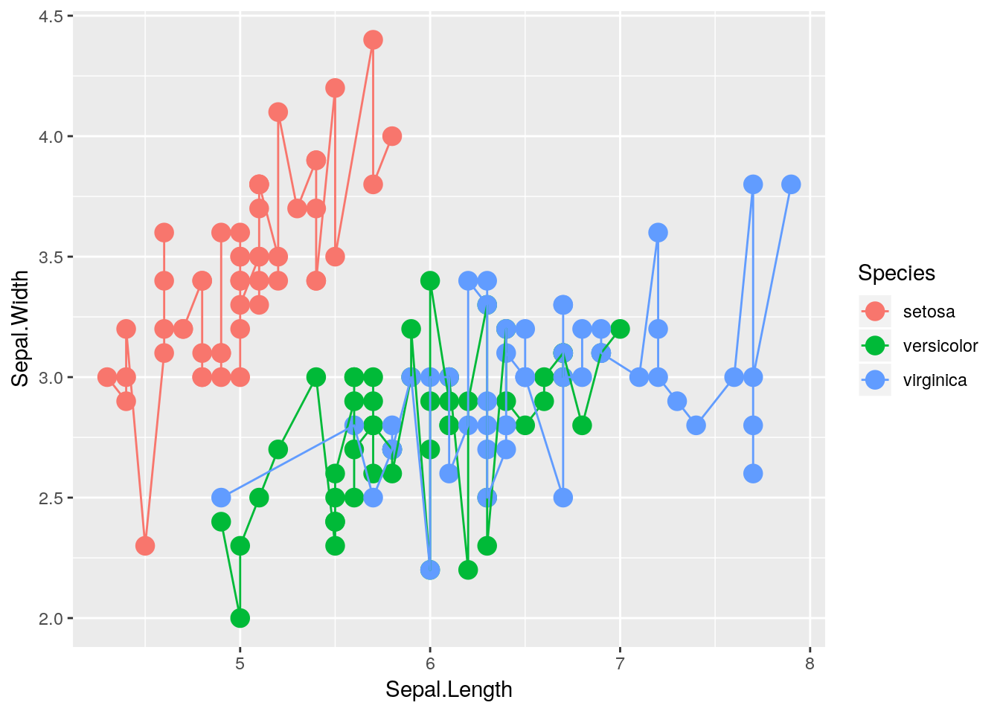
5.2 Labels, Axes, Text, etc.
The default settings of ggplot2 often produce excellent graphics, but once a graphic is chosen for dissemination, the user will likely want to customize things like the title, axes, etc. In this section some tools for customization are presented. Most will be illustrated in the context of a data set on crime rates in the 50 states in the United States. These data were made available by Nathan Yau at http://flowingdata.com/2010/11/23/how-to-make-bubble-charts/. The data include crime rates per 100,000 people for various crimes such as murder and robbery, and also include each state’s population. The crime rates are from the year 2005, while the population numbers are from the year 2008, but the difference in population between the years is not great, and the exact population is not particularly important for what we’ll do below.
First, read in the data, examine its structure, and produce a simple scatter plot of motor vehicle theft versus burglary.
> u.crime <- "http://blue.for.msu.edu/FOR875/data/crimeRatesByState2005.csv"
> crime <- read.csv(u.crime, header=TRUE)
> str(crime)'data.frame': 50 obs. of 9 variables:
$ state : Factor w/ 50 levels "Alabama ","Alaska ",..: 1 2 3 4 5 6 7 8 9 10 ...
$ murder : num 8.2 4.8 7.5 6.7 6.9 3.7 2.9 4.4 5 6.2 ...
$ Forcible_rate : num 34.3 81.1 33.8 42.9 26 43.4 20 44.7 37.1 23.6 ...
$ Robbery : num 141.4 80.9 144.4 91.1 176.1 ...
$ aggravated_assult : num 248 465 327 387 317 ...
$ burglary : num 954 622 948 1085 693 ...
$ larceny_theft : num 2650 2599 2965 2711 1916 ...
$ motor_vehicle_theft: num 288 391 924 262 713 ...
$ population : int 4627851 686293 6500180 2855390 36756666 4861515 3501252 873092 18328340 9685744 ...> ggplot(data <- crime, aes(x = burglary, y = motor_vehicle_theft)) +
+ geom_point()
5.2.1 Labels
By default axis and legend labels are the names of the relevant columns in the data frame. While convenient, we often want to customize these labels. Here we use labs() to change the x and y axis labels and other descriptive text.26
ggplot(data = crime, aes(x = burglary, y = motor_vehicle_theft)) +
geom_point() +
labs(x = "Burglaries per 100,000 population",
y = "Motor vehicle theft per 100,000 population",
title = "Burglaries vs motor vehicle theft for US states",
subtitle = "2005 crime rates and 2008 population",
caption = "Data from Nathan Yau http://flowingdata.com"
)
5.3 Customizing Axes
ggplot also provides default axis extents (i.e., limits) and other axis features. These, and other axis features such as tick marks, labels, and transformations, can be changed using the scale functions. Here the range of the x and y axis is altered to start at zero and go to the maximum of the x and y variables.27 Here too, axis labels are specified within the scale function, which is an alterative to using the labs() function.
ggplot(data = crime, aes(x = burglary, y = motor_vehicle_theft)) +
geom_point() +
scale_x_continuous(name="Burglaries per 100,000 population",
limits=c(0,max(crime$burglary))) +
scale_y_continuous(name="Motor vehicle theft per 100,000 population",
limits = c(0, max(crime$motor_vehicle_theft)))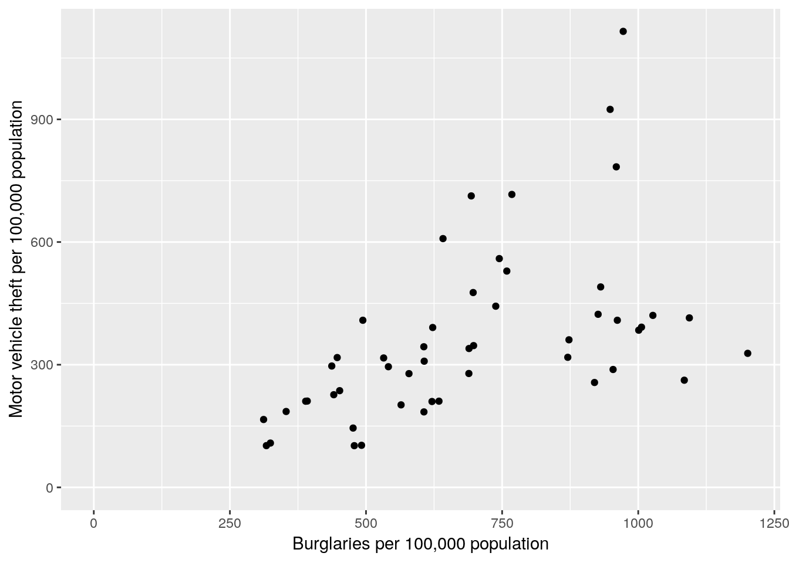
5.3.1 Text, Point Size, and Color
Next we make point size proportional to population, change the color, and add a state label. Note, in the ggplot() call I scaled population by 100,000 to help with the interpretability of the legend. Accordingly, I also changed the “population” label on the legend to “Population\n(100,000)” using the labs() function28. We use the geom_label() function to add the label, which provides an outline around the label text and allows you to control the box characteristics, e.g., I make the boxes slightly transparent using the alpha argument.29
ggplot(data = crime, aes(x = burglary, y = motor_vehicle_theft,
size=population/100000)) +
geom_point(color = "blue") +
geom_label(aes(label = state), alpha = 0.5) +
scale_x_continuous(name="Burglaries per 100,000 population",
limits=c(0,max(crime$burglary))) +
scale_y_continuous(name="Motor vehicle theft per 100,000 population",
limits = c(0, max(crime$motor_vehicle_theft))) +
labs(size="Population\n(100,000)")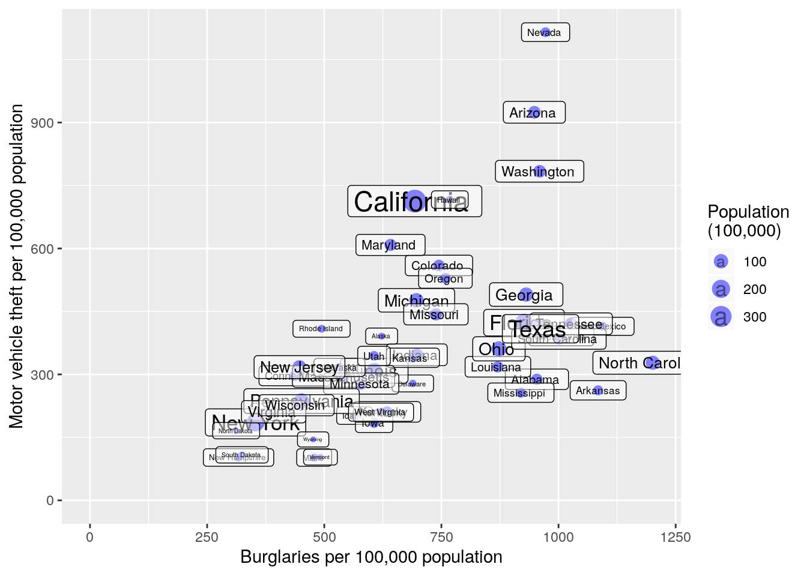
The labels are helpful but just too cluttered. There are some additional arguments that can go into geom_label() that allow for label offset; however, this won’t help us much here. Instead, we can try the ggrepel package by Kamil Slowikowski. This useful package will automatically adjust labels so that they don’t overlap. First we need to download and add the package using either RStudio’s install package buttons or via install.packages("ggrepel"). Next to make all of ggrepel’s functions available we can call library(ggrepel) function or, if we know which function we want, we can load only that particular function using the :: operators. I use :: below to make clear which function is coming from ggrepel and which is coming from ggplot2.
ggplot(data = crime, aes(x = burglary, y = motor_vehicle_theft,
size=population/100000)) +
geom_point(color = "blue") +
scale_x_continuous(name="Burglaries per 100,000 population",
limits=c(0,max(crime$burglary))) +
scale_y_continuous(name="Motor vehicle theft per 100,000 population",
limits = c(0, max(crime$motor_vehicle_theft))) +
labs(size="Population\n(100,000)") +
ggrepel::geom_label_repel(aes(label = state), alpha = 0.5)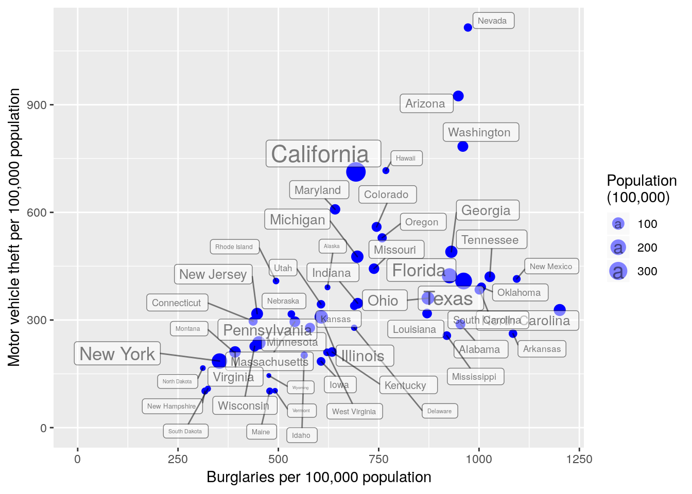
This looks a bit better. We’ll resist making additional improvements to the figure for now.
5.3.2 Practice Exercise
You run an experiment to see if the number of alcoholic beverages a person has on average every day is related to weight. You collect 15 data points. Enter these data in R by creating vectors, and then reproduce the following plot.
| # of Drinks | Weight |
|---|---|
| 1.0 | 150 |
| 3.0 | 350 |
| 2.0 | 200 |
| 0.5 | 140 |
| 2.0 | 200 |
| 1.0 | 160 |
| 0.0 | 175 |
| 0.0 | 140 |
| 0.0 | 167 |
| 1.0 | 200 |
| 4.0 | 300 |
| 5.0 | 321 |
| 2.0 | 250 |
| 0.5 | 187 |
| 1.0 | 190 |
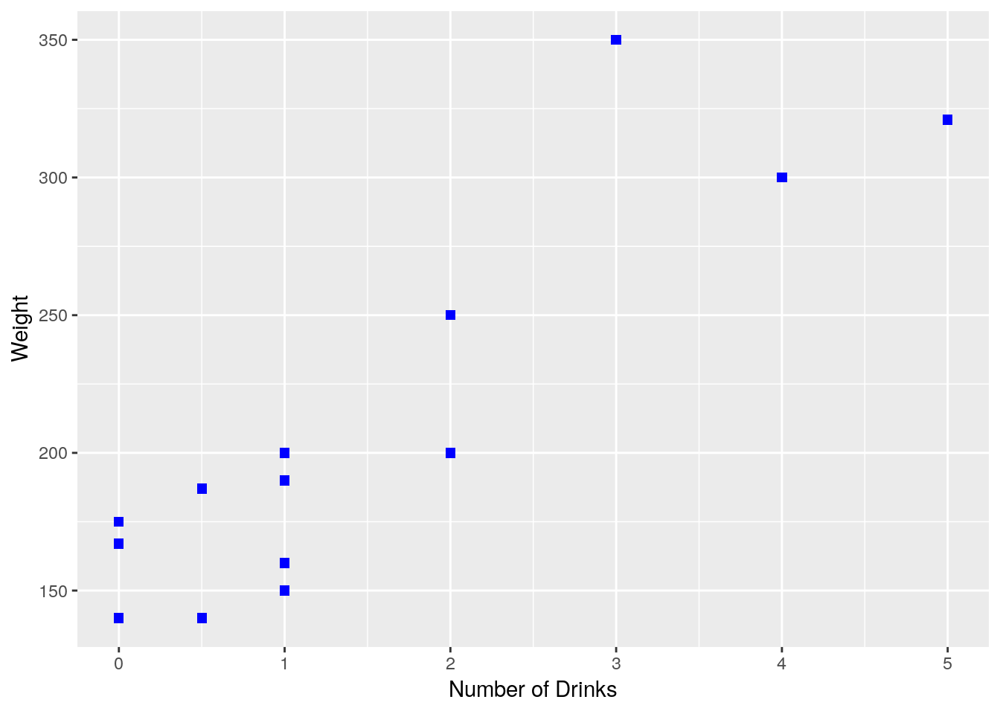
5.4 Other Types of Graphics
Scatter and line plots, which have just been presented, are common but certainly not the only graphical displays in common use. Histograms, boxplots, and bar graphs, as well as more “mathematical” displays such as the graph of a function, are commonly used to represent data. Examples of each are presented below.
5.4.1 Histograms
Simon Newcomb conducted several experiments to estimate the speed of light by measuring the time it took for light to travel from his laboratory to a mirror at the base of the Washington Monument, and then back to his lab. This is a distance of \(7.44373\) km, and by dividing this distance by the measured time, an estimate for the speed of light is obtained.
The times are of course quite small, and to avoid working with very small numbers, the data are recoded to be the deviation from \(24800\) nanoseconds. For example an observation coded as \(28\) represents a time of \(24828\) nanoseconds, while an observation coded as \(-44\) represents a time of \(24756\) nanoseconds.
> u.newcomb <- "http://blue.for.msu.edu/FOR875/data/Newcomb.csv"
> Newcomb <- read.csv(u.newcomb, header = TRUE)
> head(Newcomb) Time
1 28
2 26
3 33
4 24
5 34
6 -44ggplot(Newcomb, aes(x = Time)) + geom_histogram()`stat_bin()` using `bins = 30`. Pick better value
with `binwidth`.
The software has an algorithm to calculate bin widths for the histogram. Sometimes the algorithm makes choices that aren’t suitable (hence the R message above), and these can be changed by specifying a binwidth. In addition, the appearance of the bars also can be changed.
ggplot(Newcomb, aes(x = Time)) +
geom_histogram(binwidth = 5, color = "black", fill = "blue" )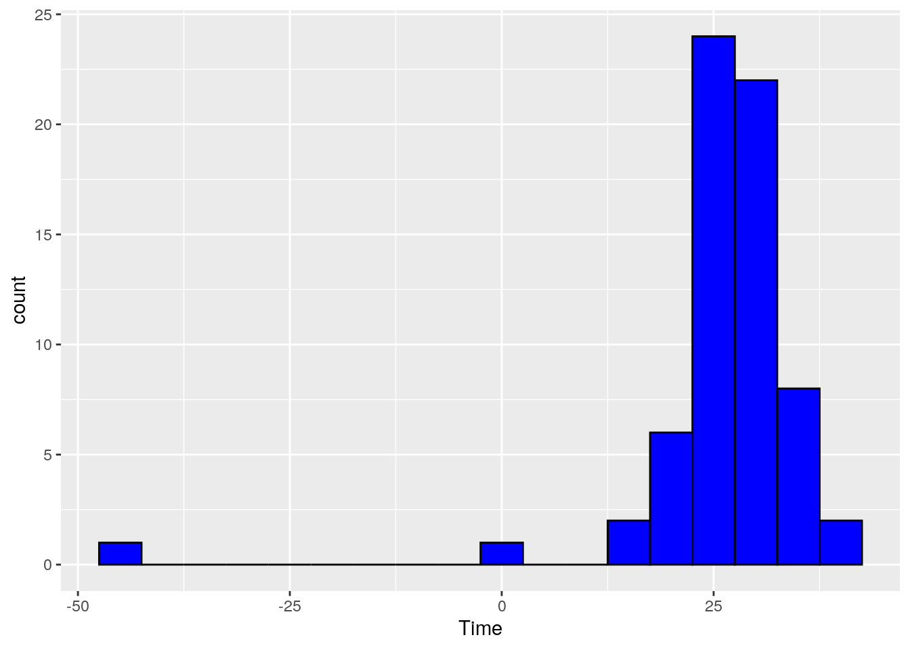
5.4.2 Boxplots
Next we consider some data from the gap minder data set to construct some box plots. These data are available in the gapminder package, which might need to be installed via install.packages("gapminder").
library(gapminder)
ggplot(data = subset(gapminder, year == 2002),
aes(x = continent, y = gdpPercap)) +
geom_boxplot(color = "black", fill = "lightblue")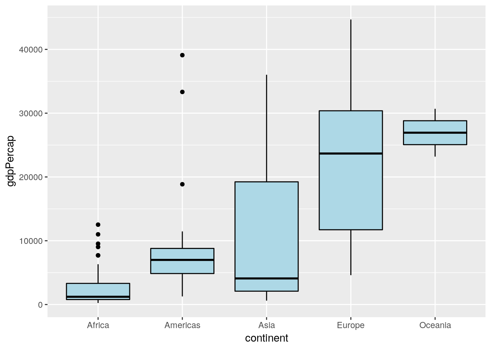
Here’s the same set of boxplots, but with different colors, different axis labels, and the boxes plotted horizontally rather than vertically.
ggplot(data = subset(gapminder, year == 2002),
aes(x = continent, y = gdpPercap)) +
geom_boxplot(color = "red", fill = "lightblue") +
scale_x_discrete(name = "Continent") +
scale_y_continuous(name = "Per Capita GDP") + coord_flip()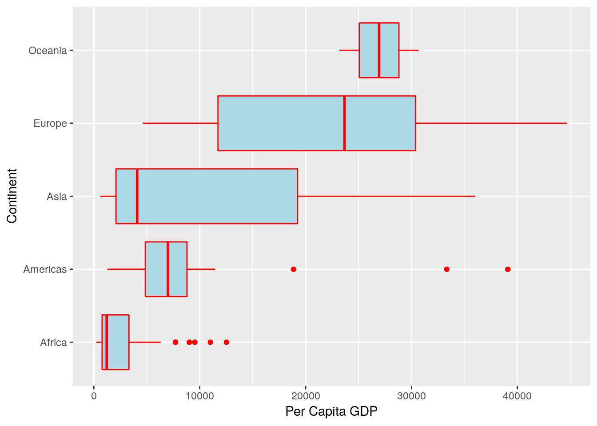
5.4.3 Bar Graphs
As part of a study, elementary school students were asked which was more important to them: good grades, popularity, or athletic ability. Here is a brief look at the data.
> u.goals <- "http://blue.for.msu.edu/FOR875/data/StudentGoals.csv"
> StudentGoals <- read.csv(u.goals, header = TRUE)
> head(StudentGoals) Gender Grade Age Race Type School Goals Grades
1 boy 5 11 White Rural Elm Sports 1
2 boy 5 10 White Rural Elm Popular 2
3 girl 5 11 White Rural Elm Popular 4
4 girl 5 11 White Rural Elm Popular 2
5 girl 5 10 White Rural Elm Popular 4
6 girl 5 11 White Rural Elm Popular 4
Sports Looks Money
1 2 4 3
2 1 4 3
3 3 1 2
4 3 4 1
5 2 1 3
6 2 1 3First, a simple bar graph of the most important goal chosen is drawn, followed by a stacked bar graph which also includes the student’s gender. We then add a side by side bar graph that includes the student’s gender.
ggplot(StudentGoals, aes(x = Goals)) + geom_bar()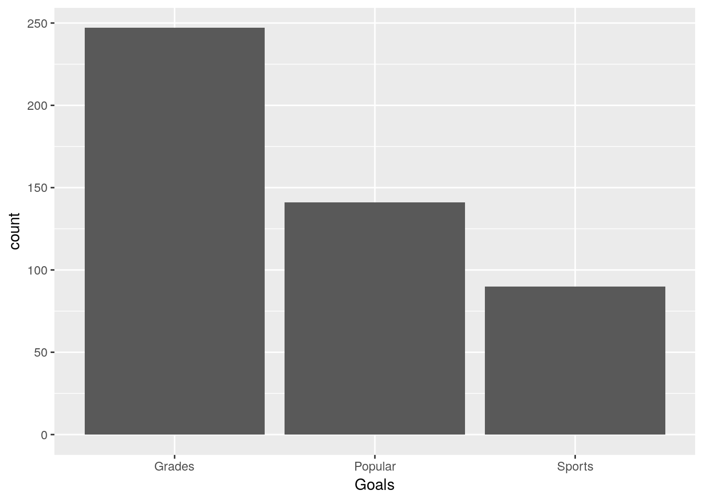
ggplot(StudentGoals, aes(x = Goals, fill = Gender)) + geom_bar()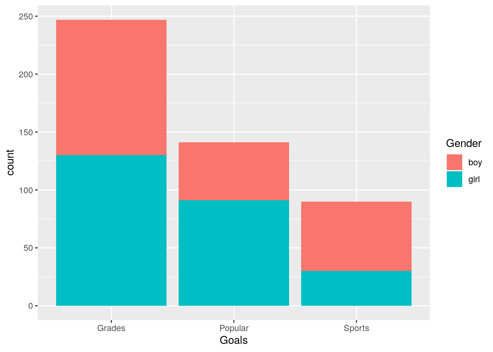
ggplot(StudentGoals, aes(x = Goals, fill = Gender)) +
geom_bar(position = "dodge")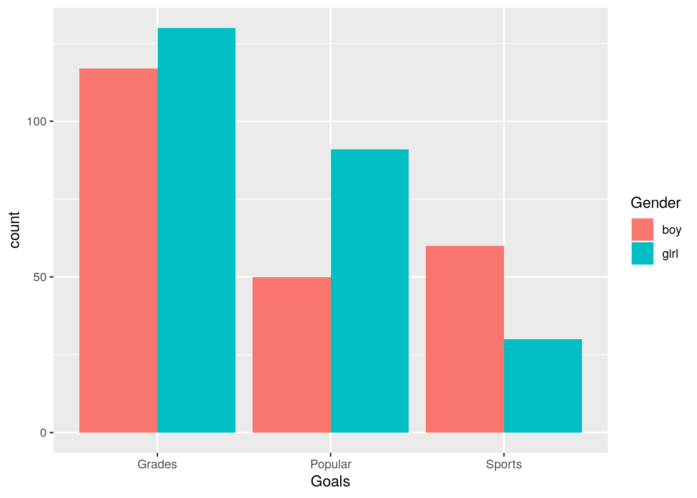
In this example R counted the number of students who had each goal and used these counts as the height of the bars. Sometimes the data contain the bar heights as a variable. For example, we create a bar graph of India’s per capita GDP with separate bars for each year in the data30.
ggplot(subset(gapminder, country == "India"), aes(x = year, y = gdpPercap)) +
geom_bar(stat = "identity", color = "black", fill = "steelblue2") +
ggtitle("India's per-capita GDP")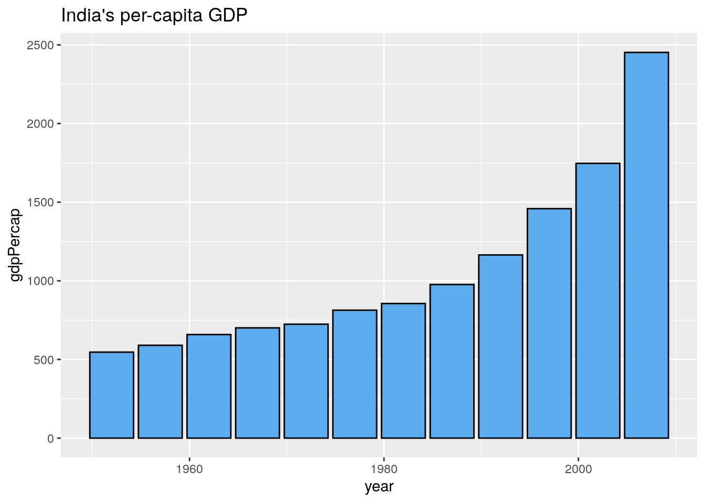
5.4.4 Graphs of Functions
One way to create a plot of a mathematical function \(f\) is to create a data frame with \(x\) values in one column and \(f(x)\) values in another column, and then draw a line plot.
x <- seq(-pi, pi, len = 1000)
sin.data <- data.frame(x = x, y = sin(x))
ggplot(data = sin.data, aes(x = x, y = y)) + geom_line() +
scale_y_continuous(name = "sin(x)")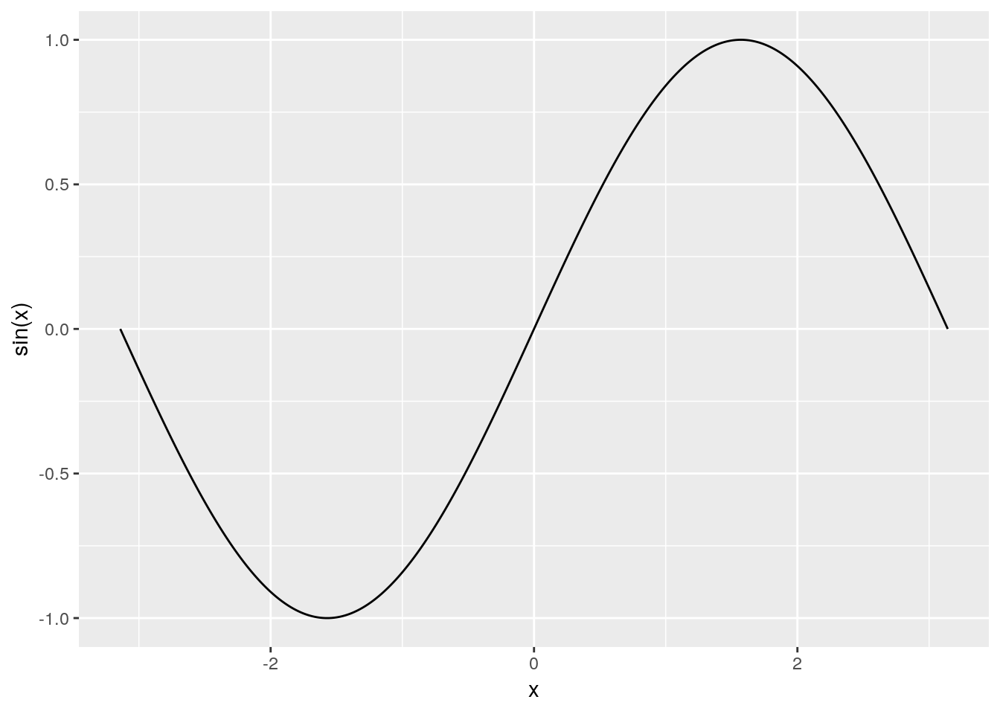
This method works well, but with a better understanding of functions in R we will be able to plot mathematical functions in a simpler and more natural way.
5.5 Themes
The theme defines non-data aspects of the plot’s characteristics such as background color, axes, and grid lines. Default themes include: theme_bw(), theme_classic(), theme_dark(), theme_gray(), theme_light(), theme_linedraw(), theme_minimal(), and theme_void(). Changing the theme is as easy as adding it to your initial ggplot() call. Here I replace the default implicit theme_bw() theme with the classic theme.
ggplot(data = sin.data, aes(x = x, y = y)) + geom_line() +
scale_y_continuous(name = "sin(x)") +
theme_classic()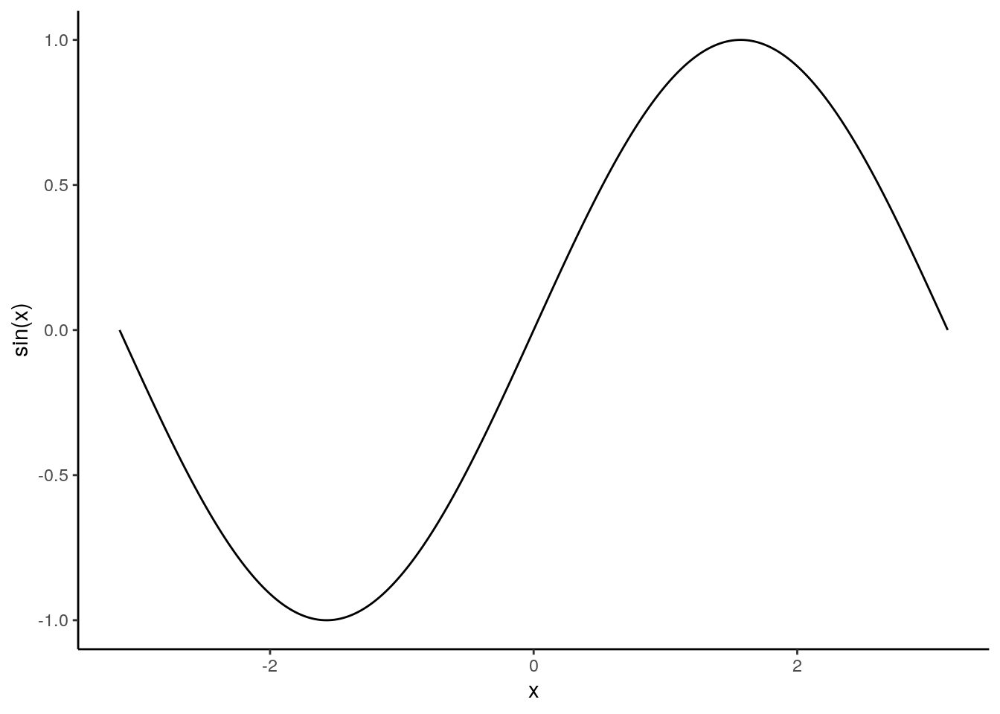
The ggthemes add-on package [https://github.com/jrnold/ggthemes] by Jeffrey Arnold provides a large selection of themes beyond the eight themes that come with ggplot2.
5.6 Saving Graphics
We often want to export our graphics to use in an external document or share with colleagues. There are several ways to save graphics in a variety of file formats. The ggsave() function will allow you to save your most recent ggplot() to a variety of vector (e.g., “eps”, “ps”, “pdf”, “svg”) or raster (e.g., “jpeg”, “tiff”, “png”, “bmp”, “wmf”) formats.31 The subsequent call to ggsave() saves the sin.data plot to a pdf file called “sin-plot.pdf”.
ggplot(filename = "sin-plot.pdf", device="pdf")The ggplot() function takes additional arguments to control scale, measurement units, and raster plot resolution, i.e., dots per inch (dpi).
5.7 More Resources
In summary, ggplot2 provides a fairly intuitive32 framework for developing an enormous variety of graphics. In addition to the resources mentioned at the beginning of this chapter, there are numerous online ggplot2 resources and galleries to get ideas for creating beautiful graphics to convey the stories in your data. See, for example,
- http://docs.ggplot2.org
- http://www.r-graph-gallery.com/portfolio/ggplot2-package
- http://www.ggplot2-exts.org/gallery
- http://www.cookbook-r.com/Graphs
- and of course www.google.com
While the built-in ggplot2 package documentation (accessible via the help tab in RStudio) is helpful, the official online documentation at http://docs.ggplot2.org is particularly useful because it provides example plots and easy navigation between related topics. The large number number of functions and syntax in ggplot2 can be daunting. RStudio provides some handy cheatsheets to help you along www.rstudio.com/resources/cheatsheets or direct link www.rstudio.com/wp-content/uploads/2016/11/ggplot2-cheatsheet-2.1.pdf.
ggplot2 also has an active mailing list at http://groups.google.com/group/ggplot2. The list is an excellent resource for users at all stages of experience. Another useful resource is stackoverflow, http://stackoverflow.com. There is an active ggplot2 community on stackoverflow, and many common questions have already been asked and answered. When posting questions on any programming mailing list, it is best to provide a minimal reproducible example of your issue. The reprex https://github.com/jennybc/reprex package by Jenny Bryan provides a convenient way to do this, and also includes advice on creating a good example. The more information you provide about your issue, the more likely the community is to help you.
5.7.1 Practice Exercise
Check out the ggplot2 cheatsheet found at https://www.rstudio.com/wp-content/uploads/2015/03/ggplot2-cheatsheet.pdf. Create a plot using the iris data set using something we didn’t mention in this chapter, and describe what is new about the plot. The plot can be anything you like, just make sure you use something not mentioned in the chapter!
5.8 Homework
Exercise 6a Learning objectives: practice using ggplot2 functions; summarize variables using graphics; introduce ggplot2 facets.